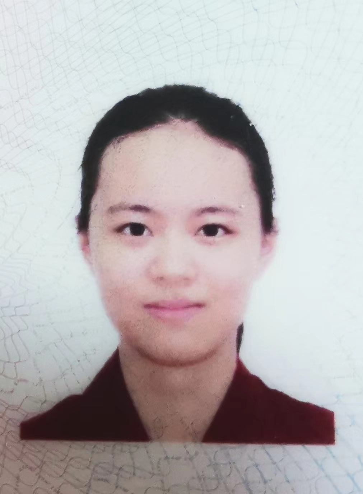

|  | B.S. student |
Currently I am an undergraduate student majoring in computer science in the School of Electronics Engineering and Computer Science,
Peking University, minor in mathematics.
My research interest is broadly situated in the intersection of computer science, mathematics and life science. I would like to use mathematical-based and statistical-based principles to invent stronger computational tools to develop the field of life sciences and robotics.
Also, I have very strong interest for life science, apart from immunology, I am learning things about neuroscience, I wish that I could know how to do wet experiments in my graduate studies! Meanwhile, I am learning quantum computing knowledge, too; it reminds me about the knowledge in general chemistry, I think I like it because I smell sence of natural sciences inside it.
In the future, I would like to continue to focus more on developing strong tools to solve problems in medical fields or robotics fields. And I want to set my goal in my lifetime in discover stronger numerical methodologies to make it more useful to human health and life.
Superpixel-based Efficient Vision Transformers. [pdf] advised by prof. Alan Yuille and his PhD students: Chenglin Yang and Xiaoding Yuan @ Johns Hopkins University
The direction of the project, methodology and coding is mostly finished by me, with 1 hour meeting with two of PhDs at each week to let them keep track of my project and give advice, and two emails with Alan for discussing topics.
We made some attempts to build a more efficient vision transformer that is mathematically more efficient than other methodologies, but shares similar performance. A new kind of attention machanism has been proposed which is theoretically proved to closely get to the limit of theoretical lowerbound, yet the experiment performance is not as promising as expected.
Pattern4Ego: Learning Egocentric Video Representation Using Cross-video Activity Patterns. [pdf] advised by prof. Hao Dong and his PhD student: Ruihai Wu
We design tools using statistical methodologies to calculate high-frequent activity patterns in egocentric videos, for example `pick up tomato and cook tomato', `open fridge and close fridge', and use them to extract more effective vision representations to guide high-level planning of intelligent robots. The ECCV2022 version(got rejected) only have the extraction of vision prior, and currently it is being revised and implemented to guide the high-level planning of robotics, and a new dataset is built for the new task, hopefully it can be submitted to CVPR2023.
The work that I have been done in the work of ECCV2022 includes the design of statistical method to calculate activity patterns, the generation of graph, paper-writing.
The work that I am doing in the work of CVPR2023 includes the dataset design and collection (1200 videos), all of the labeing work(done by code), the generation of graph, the new manipulation task.
A machine-learning based tools to predict more precise locations of amino acids of antibody structure, is used to achieve antibody structure prediction and improve antibody-antigen binding capacity. [pdf] advised by prof. Hao Dong and his PhD student: Ruihai Wu
The paper has been submitted to ECCV2022 and got rejected. We design tools using statistical methodologies to calculate high-frequent activity patterns in egocentric videos, for example `pick up tomato and cook tomato', `open fridge and close fridge', and use them to extract more effective vision representations to guide high-level planning of intelligent robots. The ECCV version only have the extraction of vision prior, and currently it is being revised and implemented to guide the high-level planning of robotics, and a new datasethat which is similar to Ego4D has been built in the simulator for our new tasks.
The work that I have been done in the work of ECCV2022 includes the design of statistical method to calculate activity patterns, the generation of graph, including the paper-writing.
The work that I am doing in the work of CVPR2023 includes the dataset design and collection (which contains 1200 videos), all of the labeing work(done by my code), the generation of graph, the new manipulation task.